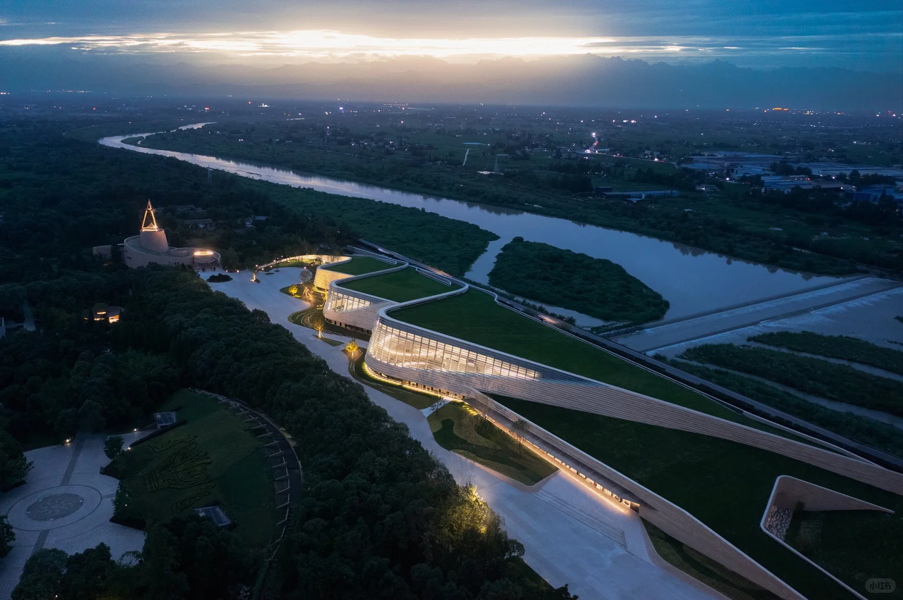
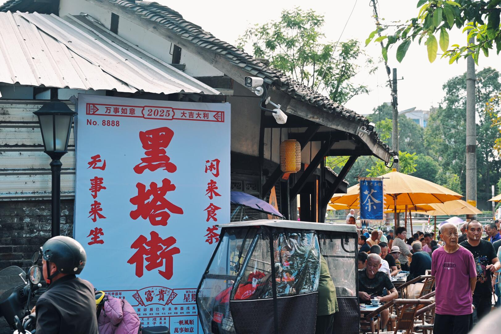
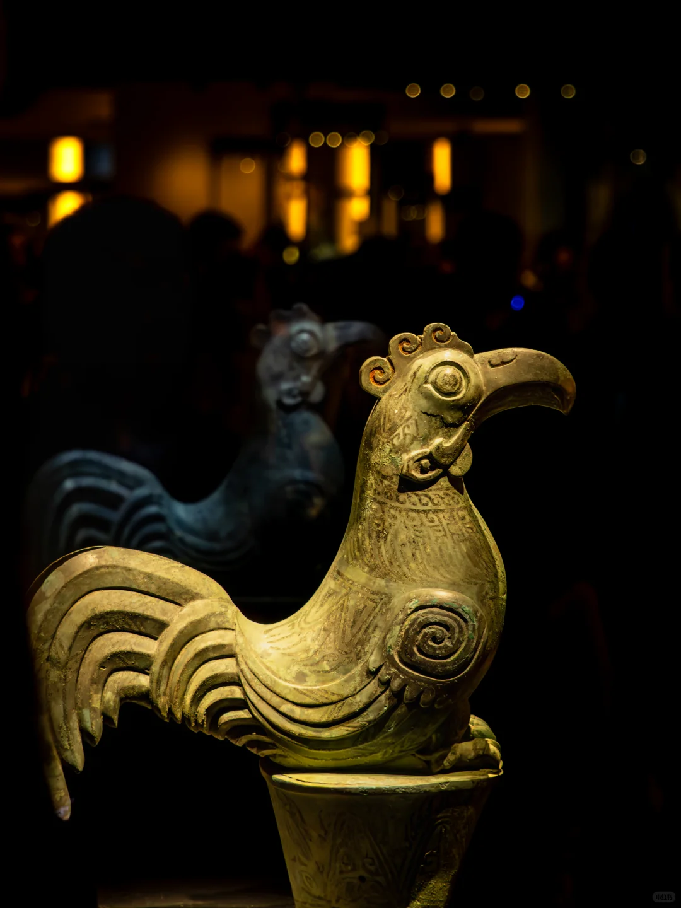
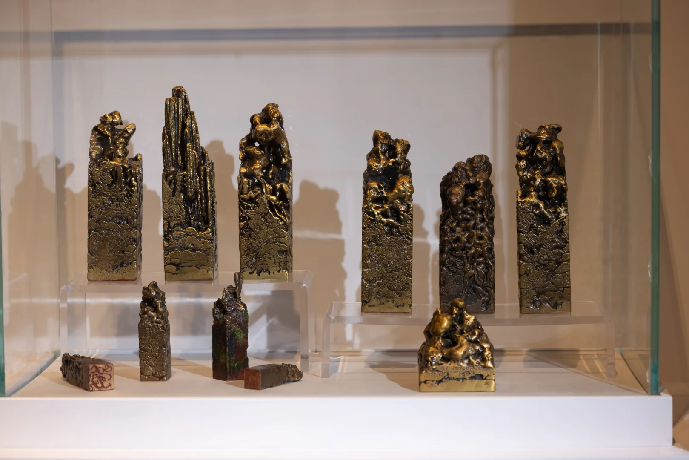

0109:00
用你的节奏，
走进广汉。
一天可以充实，两天可以从容。先确认预约与返程，再给路上的惊喜留一点空间。
已经选好了？查看我的行程One day · 首次到访 / 文化旅行
从古蜀文明，走到人间烟火。
第一次来广汉，把时间留给最值得停下来的地方。

示例时刻从已预约上午场开始，未含往返广汉的城际交通。中午用餐、转场与返程缓冲已单独留出。
0214:00
0316:30
0418:00
示例时间可调整；实时交通请使用地图确认。
Two days · 周末停留 / 喜欢慢旅行
多留一天，才遇见广汉的日常。
第一天读古蜀，第二天把老城、湖岸和一杯茶走从容。

两日线以市区慢游为主。想去连山，可用连山半日替换第二天的房湖或湖岸，不必把全部地点塞满。
One day · 带孩子 / 希望少走路
少赶一站，多留一点好奇。
一个重点展馆、一段户外活动，再加一顿好好吃的饭。

以已预约的上午场为前提。孩子疲倦时直接跳过湖岸，不必完成所有节点。
One day · 雨天 / 室内为主
雨落下来，旅行也可以慢下来。
以室内观展与用餐为重点，减少露天景点间的来回。

三星堆仍需提前预约，入口排队与转场可能有露天路段。若无预约，改成市区餐饮与休息，不承诺临时入馆。
0109:30
0214:30
示例时间可调整；实时交通请使用地图确认。
One day · 赏花 / 乡野 / 自驾
春天，给桃花和餐桌半天时间。
这是一条春季收藏路线，出发日期由实际花期决定。
适用于春季花期，不表示现在正在开花。示例时间从抵达连山开始，城区往返、停车和花期需出发前确认。
Make room for the journey
留出转场，才有从容。
先确定预约
三星堆是预约型目的地。先看能预约的日期与时段，再调整其他节点的先后。
打开三星堆官网相邻地点合并走
雒城与房湖安排为同一段联游。黑塔街另查市区导航，不按相邻景点估算步行。
把返程留在计划里
示例时刻不含抵达广汉的城际交通。先查返程车次，为用餐、转场和进站留出缓冲。